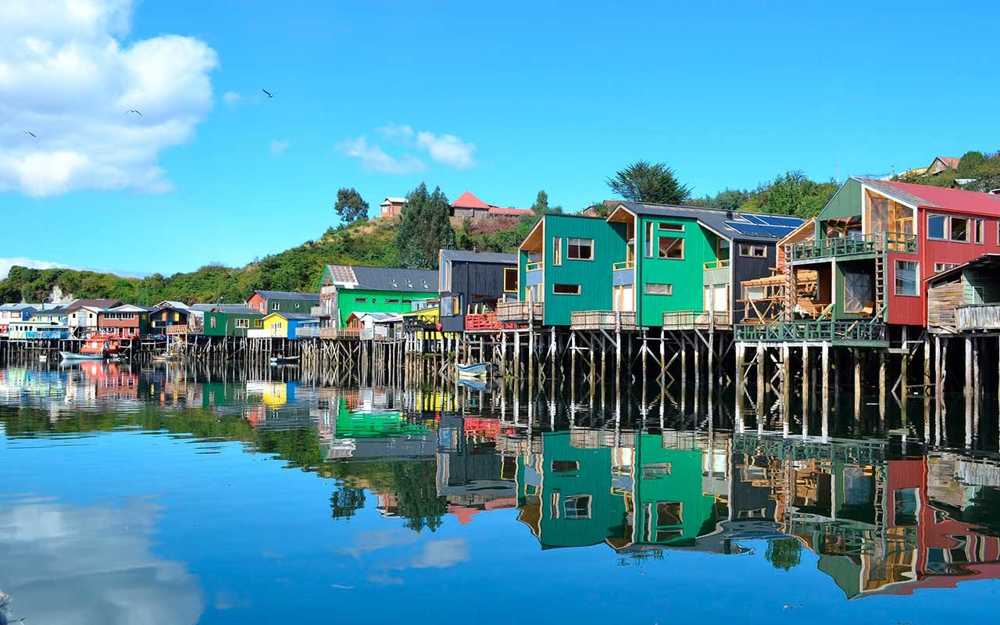
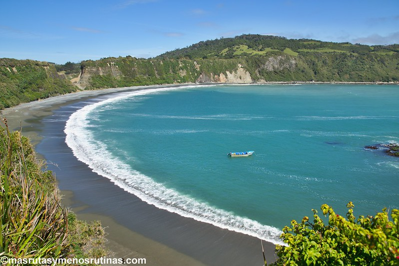
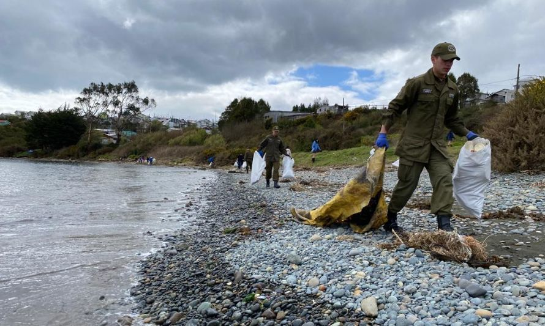

Isla De Chiloé

La Isla de Chiloé, situada frente a la costa sur de Chile, es un lugar rico en cultural y
naturaleza.
Conocida por su abundante vegetación, bosques y una maravillosa costa de mar, la isla contiene una biodiversidad única,
incluyendo animales poco comunes como el pudú y el lobo marino de dos pelos. Su clima marítimo templado y sus condiciones
geográficas especiales
la convierten en un ecosistema único y vulnerable.

La cultura chilota, arraigada en tradiciones ancestrales y mitología,
se refleja en la arquitectura de sus coloridas casas de palafitos y en su gastronomía,
destacando platos como el curanto y el milcao.
Sin embargo, la isla enfrenta desafíos ambientales, incluyendo la deforestación, la erosión costera y
la contaminación debido a la actividad humana y al cambio
climático.
IMPORTANTE

En el marco de las actividades por el mes del mar, las distintas Capitanías de Puerto de la jurisdicción
de la Gobernación Marítima de Castro, efectuaron una actividad de limpieza de playas este 27 de mayo.
La actividad reunió a cientos de voluntarios de todas las edades de las localidades de la Isla de Chiloé,
así como integrantes de Carabineros, Municipalidades, Empresas Privadas, Colegios, entre otros,
quienes bajo un ambiente de camaradería procedieron a la recolección de todo tipo de residuos domiciliarios y
pesqueros a lo largo del borde costero.
Este tipo de acciones tiene por finalidad acercar la Armada de Chile a la comunidad, contribuyendo a la preservación y
cuidado del medio ambiente acuático, generando conciencia y al mismo tiempo, promover el cuidado de estos espacios de
esparcimiento público, lo cual va en directo beneficio de la sociedad en general.